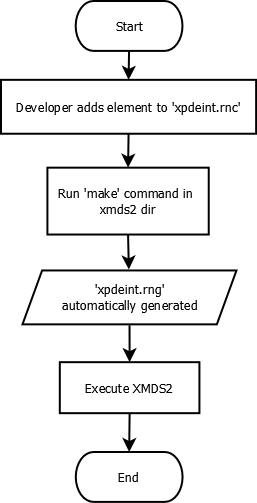
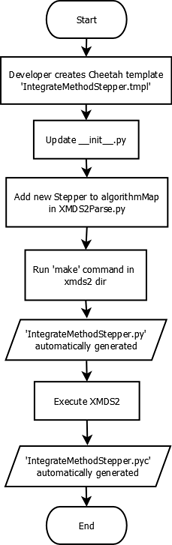
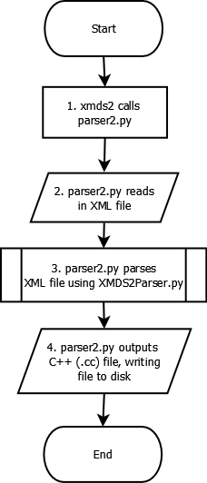
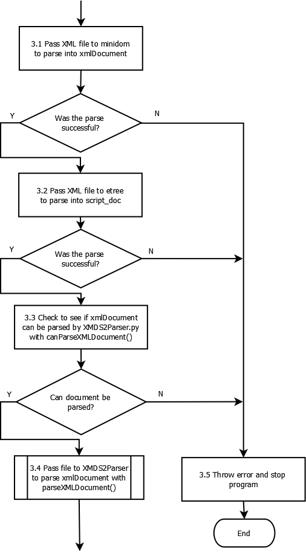
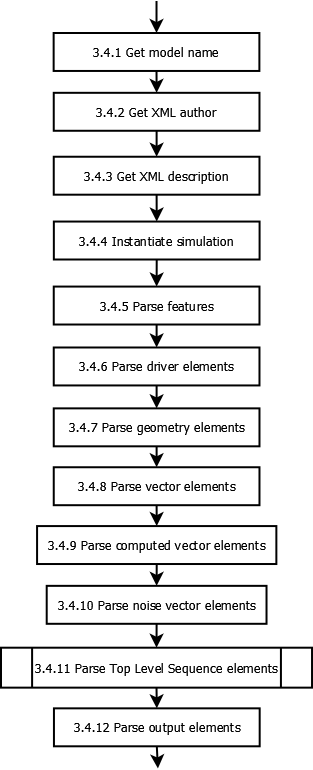

Developer Documentation¶
Developers need to know more than users. For example, they need to know about the test suite, and writing test cases. They need to know how to perform a developer installation. They need to know how to edit and compile this documentation. They need a step-by-step release process.
Generating reproducible C++ code¶
Since moving to Python 3, the C++ code that XMDS2 generates can vary from invocation to invocation. That means you can run “xmds2 testscript.xmds”, look at the generated C++ code, run “xmds2 testscript.xmds” again and obtain slightly different C++ code. The reason for this is that XMDS2 uses sets internally to store a number of object types such as vectors and transforms. In Python 2, when you iterate over a set, the ordering was in principle not guaranteed, but in practice is almost always was. Python 3, however, randomizes its hash seeds on every run, so that the order you get things out of a set really won’t be same run to run.
This means that the C++ code that XMDS2 generates will differ run-to-run, but when compiled and executed will still produce the same result. When working on XMDS it is often easier to debug things if the C++ code doesn’t change. To make this happen you have to tell Python not to randomize its hash table seeds, which you can do by setting an environment variable via
export PYTHONHASHSEED=0
This ensures any Python programs launched in that terminal will produce reproducible code.
Test scripts¶
Every time you add a new feature and/or fix a new and exciting bug, it is a great idea to make sure that the new feature works and/or the bug stays fixed. Fortunately, it is pleasantly easy to add a test case to the testing suite.
Write normal XMDS script that behaves as you expect.
Add a
<testing>element to your script. You can read the description of this element and its contents below, and have a look at other testcases for examples, but the basic structure is simple:.
<testing> <command_line> </command_line> <arguments> <argument /> <argument /> ... </arguments> <input_xsil_file /> <xsil_file> <moment_group /> <moment_group /> ... </xsil_file> </testing>
Put into the appropriate
testsuite/directory.run
./run_tests.pyThis will automatically generate your_expectedfiles.Commit the
.xmds,*_expected.xsilfile and any*_expected*data files.
There are examples of test cases in the testsuite directory. Feel free to add to them! Ideally a testcase should run quickly (a second or less, unless it’s specifically testing a huge number of dimensions or something similar), and not produce very much data (since we have to bundle test results with the XMDS2 code, resulting in larger downloads). This is because there are a lot of test cases and running the full testsuite is taking an increasing amount of time.
<testing> element¶
The element that wraps everything, e.g.
<testing>
...
</testing>
This element is required for a test case script.
<command_line> element¶
The test runner assumes it can fire off your test script by just using the filename (without the .xmds extension). So if you have a test case script called MyTest.xmds, it assumes that it can be run via
xmds2 MyTest.xmds
./MyTest
If the command to run your executable isn’t “./MyTest” you can override it with the <command_line> element. For example, if you need your script to be run as an MPI job with 8 processors, you could specify
<testing>
<command_line> mpirun -n 8 ./MyTest </command_line>
...
</testing>
This element is optional.
<arguments> element¶
This can be used to add additional arguments to the command used to run the executable. So, for example, if you wanted to pass lattice sizes to the script, you could use
<testing>
<arguments> --latticesize_x 10 --latticesize_y 10 </arguments>
<command_line> mpirun -n 8 ./MyTest </command_line>
...
</testing>
which would get the test runner to execute your test case with
mpirun -n 8 ./MyTest --latticesize_x 10 --latticesize_y 10
This element is optional.
<input_xsil_file> element¶
This is a list of all .xsil files used by your testcase as input, e.g. if you are using a file to initialise your vectors. So, for example, if you had previously output the files “input_file_breakpoint.xsil” and the associated “input_file_breakpoint.h” and your test case script needs to load them for vector intialisation, you’d need to inform the test runner of this fact via
<testing>
<input_xsil_file name="input_file_breakpoint.xsil" />
...
</testing>
This element is optional.
<xsil_file> element¶
This element is used to compare the results of the test with some previously generated expected results. An example would be
<testing>
<xsil_file name="MyTest.xsil" expected="MyTest_expected.xsil" absolute_tolerance="1e-6" relative_tolerance="1e-5" />
...
The “name” attribute specifies the filename of the source data. Generally speaking it will be name of the output file that your test case creates when it runs. The “expected” attribute specifies the filename of the canonical correct data against which you wish to compare.
You can specify the “absolute_tolerance” attribute or the “relative_tolerance” attribute or both. If the comparison between the generated data and expected data exceeds these specifications the test will be counted as failed.
This element is optional but recommended. If you don’t specify it, the only way the test will fail is if it fails to compile and link, or crashes for some other reason (division by zero etc).
<moment_group> element¶
This element is used if you want to specify the tolerances per moment group, rather than having the same tolerance for all moment groups. Tolerances specified per moment group override the tolerances specified in the <xsil_file_name> element. The syntax is
<testing>
<xsil_file name="MyTest.xsil" expected="MyTest_expected.xsil" absolute_tolerance="1e-6" relative_tolerance="1e-5" />
<moment_group number="1" absolute_tolerance="1e-7" relative_tolerance="1e-6" />
<moment_group number="2" absolute_tolerance="1e-3" relative_tolerance="1e-6" />
...
This element is optional.
XMDS Documentation¶
Documentation in XMDS is written as reStructuredText files (.rst), which are then parsed into HTML files to be displayed on their website.
You can find the user documentation folder located admin/userdoc-source. This is where all of the .rst files are kept. If you’re wanting to add documentation to the site, you’ll need to create your own .rst file, with the name of the webpage as the filename.
RST is a relatively simple language, which is basically simplified HTML markup. For documentation on how to make Lists, Href Links, Embed images etc, you should check here;
http://docutils.sourceforge.net/docs/user/rst/quickref.html http://docutils.sourceforge.net/docs/ref/rst/restructuredtext.html
However, you should easily be able to use some of the pre-existing .rst files in the project as a template to create yours.
Once your documentation is in this folder, it should be deployed along with the project to their website when you run create_release_version.sh, which can be found in the /Trunk/xpdeint/admin folder. If you would like to test to see what your rst file generates without running this shell script, you can use the Makefile in the userdoc-source folder, by running “make html”.
NOTE: Before you can run the create_release_version.sh file, there are a few packages you will need. This command uses latex to generate the XMDS2 pdf, so you’ll be needing the following packages; texlive-fonts-recommended, texlive-lang-cjk, texlive-latex-base.
How to update XMDS2 script validator (XML schema)¶

This is a short guide to adding an element to XMDS2, so that it can be validated by the XMDS2 script validator. In this guide, the example being used will be the addition of a matrix element to the validator. The matrix will have a ‘name’ and a ‘type’ (so it can be called later, and the type is known for future reference). Each matrix will also need a ‘row’ component, and possibly an initialisation value.
Navigate to xpdeint/support/xpdeint.rnc. This is a RelaxNG compact file, which specifies the XML schema which is only used for issuing warnings to users about missing or extraneous XML tags / attributes. Add the following lines to the end of the file (so that it is outside all other brackets in the file):
Matrix = element matrix {
attribute name { text }
, attribute type { text }?
, element components { text }
, element initialisation {
attribute kind { text }?
}?
}
Save this file, and then in the terminal navigate to the folder xpdeint/support/ and run make. This updates the XML based file xpdeint/support/xpdeint.rng, which is the file the parser uses to validate elements in XMDS2. This file which is used is in RelaxNG format, but RelaxNG compact is easier to read and edit.
Commit both xpdeint/support/xpdeint.rnc and xpdeint/support/xpdeint.rng to the code repository.
How to introduce a new integrator Stepper into the XMDS2 environment¶

This is a short guide to adding a new stepper containing a new mathematical technique to XMDS2, which can then be used by to integrate equations. This guide describes the logistics of introducing a new stepper and as such, the code inside the stepper template is outside the scope of this document. The new stepper which will be used in this guide will be called ‘IntegrateMethodStepper’.
Navigate to the xpdeint/Segments/Integrators directory. Create a file called IntegrateMethodStepper.tmpl in this directory. In this file, implement the new integration algorithm (follow the convention of existing steppers in that folder). In this same folder, open the file named __init__.py and add the following line to the bottom of the file and save it:
import IntegrateMethodStepper
Navigate up until you are in the xpdeint directory. Open the file XMDS2Parser.py, and ‘find’ the algorithm map (Ctrl+F > algorithmMap works for most text editors). The mnemonic ‘IM’ will be used for our Stepper. If the stepper uses fixed step sizes, then add the following line to the algorithm map:
'IM': (Integrators.FixedStep.FixedStep, Integrators.IntegrateMethodStepper.IntegrateMethodStepper),
Otherwise, if your stepper is an adaptive Stepper, add the following line:
'IM': (Integrators.AdaptiveStep.AdaptiveStep, Integrators.IntegrateMethodStepper.IntegrateMethodStepper),
In the terminal, navigate to the xpdeint directory, and run make over the entire directory. ‘IM’ can now be used to specify the new Stepper as your integration algorithm inside your .xmds files, e.g.
<integrate algorithm="IM" interval="5.0" steps="2000">
...
</integrate>
Logical breakdown of XMDS2 Parsing Process¶
The following information is intended to assist developers in understanding the logical process undertaken by the XMDS2 system when parsing an .xmds file. The documentation was not designed to be exhaustive, but rather to help paint a picture of part of the way XMDS2 works.
The flowcharts have been created in open source diagram drawing program Dia, and compiled into .png files which are displayed below. This page contains links to the original .dia files, so if you find any error in the information below (or you’d like to extend it, by adding in more information), please update the .dia files and commit them (and their compiled versions) to svn.
Overall process for parsing XML file in XMDS2¶

The original .dia file can be downloaded here.
parser2.py parses XML file (Sub process 3)¶

You can download the original dia file here.
Pass file to XMDS2Parser to parse xmlDocument with parseXMLDocument() (Sub process 3.4)¶

You can download the original dia file here.
Directory layout¶
XMDS2’s code and templates¶
All .tmpl files are Cheetah template files. These are used to generate C++ code. These templates are compiled as part of the XMDS2 build process to .py files of the same name. Do not edit the generated .py files, always edit the .tmpl files and regenerate the corresponding .py files with make.
xpdeint/:Features/: Code for all<feature>elements, such as<globals>and<auto_vectorise>Transforms/: Code for the Fourier and matrix-based transforms (including MPI variants).
Geometry/: Code for describing the geometry of simulation dimensions and domains. Includes code forGeometry,Fieldand allDimensionRepresentations.Operators/: Code for all<operator>elements, includingIP,EXand the temporal derivative operatorDeltaA.Segments/: Code for all elements that can appear in a<segments>tag. This includes<integrate>,<filter>, and<breakpoint>.Integrators: Code for fixed and adaptive integration schemes, and all steppers (e.g.RK4,RK45,RK9, etc.)
Stochastic/: Code for all random number generators and the random variables derived from them.Generators/: Code for random number generators, includesdSFMT,POSIX,Solirte.RandomVariables/: Code for the random variables derived from the random number generators. These are the gaussian, poissonian and uniform random variables.
SimulationDrivers/: Code for all<driver>elements. In particular, this is where the location of MPI and multi-path code.Vectors/: Code for all<vector>elements, and their initialisation. This includes normal<vector>elements as well as<computed_vector>and<noise_vector>elements.includes/: C++ header and sources files used by the generated simulations.support/: Support fileswscript:wafbuild script for configuring and compiling generated simulationsxpdeint.rnc: Compact RelaxNG XML validation for XMDS scripts. This is the source file for the XML RelaxNG filexpdeint.rngxpdeint.rng: RelaxNG XML validation for XMDS scripts. To regenerate this file fromxpdeint.rnc, just runmakein this directory.
waf/: Our included version of the Python configuration and build toolwaf.waf_extensions/:waftool for compiling Cheetah templates.xsil2graphics2/: Templates for the output formats supported byxsil2graphics2.wscript:wafbuild script for XMDS2 itself.CodeParser.py: Minimally parses included C++ code for handling nonlocal dimension access, IP/EX operators and IP operator validation.Configuration.py: Manages configuration and building of generated simulations.FriendlyPlusStyle.py: Sphinx plug-in to improve formatting of XMDS scripts in user documentation.This directory also contains code for the input script parser, code blocks, code indentation, and the root
_ScriptElementclass.
Support files¶
admin/: Documentation source, Linux installer and release scripts.developer-doc-source/: source for epydoc python class documentation (generated from python code).userdoc-source/: source for the user documentation (results visible at www.xmds.org and xmds2.readthedocs.org).xpdeint.tmbundle/: TextMate support bundle for Cheetah templates and XMDS scripts
bin/: Executable scripts to be installed as part of XMDS2 (includesxmds2andxsil2graphics2).examples/: Example XMDS2 input scripts demonstrating most of XMDS2’s features.testsuite/: Testsuite of XMDS2 scripts. Run the testsuite by executing./run_tests.py